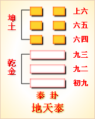

<!DOCTYPE html PUBLIC "-//W3C//DTD XHTML 1.0 Transitional//EN" "http://www.w3.org/TR/xhtml1/DTD/xhtml1-transitional.dtd">

<html xmlns="http://www.w3.org/1999/xhtml">
<head>
<meta content="text/html; charset=utf-8" http-equiv="Content-Type"/>
<title>周易第十一卦：泰卦�?地天�?坤上乾下原文解释翻译-周易-国学�?/title>
<meta content="周易,泰卦,天地�?坤上乾下" name="keywords"/>
<meta content="周易,泰卦,天地�?坤上乾下，周易第十一卦：泰卦�?地天�?坤上乾下解释翻译�?（地天泰）坤上乾�?《泰》：小往大来，吉，亨�?初九，拔茅茹以其汇。征吉�?九二，包荒，用冯河，不遐遗。朋亡，得尚于中行�?九三，无平不陂，无往不复。艰贞无咎。勿恤其�? name="description"/>
<link href="css.css" media="screen" rel="stylesheet" type="text/css"/>
</head>
<body>
<div class="gxlayout">
</div>
<div class="gxlayout">
<div class="ihead">
<div class="title"><a>周易</a></div>
<ul class="more fl">
<li>当前位置:<a>国学梦首�?/a> &gt; <a>国学经典</a> &gt; <a>经部</a> &gt; <a>四书五经</a> &gt; <a>周易</a> &gt;  周易第十一卦：泰卦�?地天�?坤上乾下原文解释翻译</li>
</ul>
</div>
<div class="gxbl fl">
<div class="latitle">

<h1>周易第十一卦：泰卦�?地天�?坤上乾下</h1>
<div class="lainfo"><span>作者：佚名</span> <span>全集�?a>周易</a></span> <span>来源：网�?/span> <span>[<a rel="nofollow" target="_blank">挑错/完善</a>]</span></div>
</div>
<div class="lacontent">
<div class="clearfix"></div>
<p style="text-align:center"></p>
<p style="text-align:center"><a>周易第十一卦详�?/a></p>
<p style="text-align:center"><a>第十一卦初九爻详解</a>　<a>第十一卦九二爻详解</a>　<a>第十一卦九三爻详解</a></p>
<p style="text-align:center"><a>第十一卦六四爻详解</a>　<a>第十一卦六五爻详解</a>　<a>第十一卦上六爻详解</a></p>
<p><strong><a target="_blank">周易</a>第十一�?�?地天�?坤上乾下</strong></p>
<p>泰：小往大来，吉亨�?/p>
<p>彖曰：泰，小往大来，吉亨。则是天地交，而万物通也;上下交，而其志同也。内阳而外阴，内健而外顺，内君子而外小人，君子道长，小人道消也�?/p>
<p>象曰：天地交泰，后以�?�?成天地之道，辅相天地之宜，以左右民�?/p>
<p>初九：拔茅茹，以其汇，征吉。象曰：拔茅征吉，志在外也�?/p>
<p>九二：包荒，用冯河，不遐遗，朋亡，得尚于中行。象曰：包荒，得尚于中行，以光大也�?/p>
<p>九三：无平不陂，无往不复，艰贞无咎。勿恤其孚，于食有福。象曰：无往不复，天地际也�?/p>
<p>六四：翩翩不富，以其邻，不戒以孚。象曰：翩翩不富，皆失实也。不戒以孚，中心愿也�?/p>
<p>六五：帝乙归妹，以祉元吉。象曰：以祉元吉，中以行愿也�?/p>
<p>上六：城复于隍，勿用师。自邑告命，贞吝。象曰：城复于隍，其命乱也�?/p>
<p><strong><a href="11_泰卦.html" target="_blank">泰卦</a>卦象，地天泰卦的象征意义</strong></p>
<p><strong>泰卦�?a target="_blank">易经</a>64卦第十一卦，地天泰卦有哪些具体的象征意义�?</strong></p>
<p><strong>泰卦，这个卦是异卦相叠，下卦为乾，上卦为坤。乾为天，为�?坤为地，</strong></p>
<p>为阴。本来乾为天，应该在上，坤为地，应该在下，但是，泰卦这种上坤下乾却很吉利。上卦为坤，为地，地属阴�?下卦为乾，为天，天为阳气。阴气凝重而下沉，阳气<a target="_blank">清明</a>而上升，阴阳交感。阳气上升若无制约，就会耗尽能量，也不会产生结果，阴气下沉若无制约，也会耗尽能量，故阳气上升，有阴气覆护;阴气下沉，有阳气承托。阴阳交感，上下互通，天地相交，万物泰安�?/p>
<p>泰卦的意思就是平安、安泰、国泰民安。在现实生活中，<a href="01_乾卦.html" target="_blank">乾卦</a>有如领导，�?a href="02_坤卦.html" target="_blank">坤卦</a>有如下属，领导深入到下面，表示对下属的友好和亲善;下属从下面到了上面，表示对领导的拥护和爱戴。领导和下属交相呼应，你有求我有应，你有事我来帮。上位者与下位者彼此往来，心意相通，一派安泰的场面�?/p>
<p>对于个人来说，泰卦表达了外柔内刚的做人道理。乾卦代表刚健、刚强的性格，在内卦里。而坤卦代表顺从、平和、柔弱，处在外卦的位置。这样外柔内刚，外圆内方，既坚持原则，又注重决策和行为的灵活性。内秉刚健之德，外抱柔顺之态，既有敢于坚持原则、前进不退缩的品质，对人又谦和、柔顺，处事圆滑通泰�?/p>
<p>泰卦位于<a href="10_履卦.html" target="_blank">履卦</a>之后，《序卦》中说道：“履而泰然后安，故受之以泰。泰者，通也。”履，通“礼”，指按礼仪去行动，就可以通达，并且平安，于是有了泰卦�?/p>
<p>《象》曰：天地交，泰;后以财成天地之道，辅相天地之宜，以左右民�?/p>
<p>《象》中指出：泰卦的卦象为乾(�?下坤(�?上，地气上升，乾气下降，为地气居于乾气之上之表象，阴阳二气一升一降，互相交合，顺畅通达;君主这时要掌握时机，善于裁节调理，以成就天地交合之道，促成天地化生万物之机宜，护佑天下百姓，使他们安居乐业�?/p>
<p>泰卦象征通达，启示了因时而变的道理，属于中中卦。《象》这样来断此卦：学文满腹入场闱，三元及第得意回，从今解去愁和闷，喜庆平地一声雷�?/p>
<p>此卦的卦名为泰。《说文》中说，“泰，大也。”�?a target="_blank">礼记</a>•曲礼上》疏，“泰者，大中之大也。”可见泰的意思是极其的博大。地大物博，人们自然就富裕，所以泰也有富裕、宽裕的意思。人们丰衣足食，社会就会和平安定，所以泰还含有平安、稳定的含义�?/p>
<p>从卦象上分析，泰卦上卦为坤为地，下卦为乾为天，地在天上便是泰卦的卦象。这个形象让人有些费解：地怎么会跑到天上去�?当然，也许有些易学家会认为地球是圆的，所以地可以在天上。不过我想当时的天文学应该还没有那么发达，应该还不知道地球是球形的。其实，这一卦的另一卦象是，上卦为坤为母，下卦为乾为父。反映的是母系氏族社会的繁荣阶段。这才是这一卦的真正含义。只是后来封建社会的大男子主义文人们是不想说“女上男下”的，尽管明显是坤卦在上面，乾卦在下面，硬说是“天地交'这样一交，便不会抹杀男人的尊严与地位了。八卦卦象在文王之前即已形成，不过不统一，周公根据文王的八卦写了《象辞传》、《象传》等内容，有些内容则是前人的知识，有些则是后人的发挥。所以《易经》中的泰卦已没有了最初的含义，而只代表天地相交，社会稳定太平之意了。前面的<a href="09_小畜�?html" target="_blank">小畜�?/a>代表小的积蓄，人们在积蓄中不断实践发展，接下来便过上了更富裕的生活。所以泰卦安排在履卦之后�?/p>
<p>泰卦也是十二消息卦之一，其阳爻代表阳气，其阴爻代表阴气。卦中有三个阳爻，便是“三阳幵泰”，在节气上代表<a target="_blank">雨水</a>节。泰卦的六爻代表<a target="_blank">立春</a>�?a target="_blank">惊蛰</a>的三十余天。五天为一候，一爻代表一候。所以泰卦代�?a target="_blank">春天</a>的来临，春天万开始生长，古人认为是天地交使万物繁衍，所以泰卦有“天地交”的含义。并且，上卦的坤代表阴与地，其性质向下，下卦乾代表阳与天，其性质向上，一上一下，所以意志可以相交。这是“天地交”的又一含义�?/p>
<p>关键词：周易,泰卦,天地�?坤上乾下</p>
<div class="clearfix"></div>
<div class="title"><div class="thot">解释翻译</div><span>[挑错/完善]</span></div><p><a href="11_泰卦.html" target="_blank">泰卦</a>：由小利转为大利，吉利亨通�?/p>
<p>初九：拔掉茅茄草，按它的种类特征来分辨。前进，吉利�?/p>
<p>九二：把匏瓜挖空，用它来渡河，不至于下沉。财物损失了�?半路上又得到别人帮助�?/p>
<p>九三：平地总会变成起伏的斜坡，外出离开终归要返回。占问旱情，没有灾难。不用担心，相信会有粮食吃，会有福份�?/p>
<p>六四：骗人说大话，使邻近的人一同遭殃，没有提防，还有人成了俘虏�?/p>
<p>六五：殷王帝乙把女儿嫁给周文王，因此得福，大吉大利�?/p>
<p>上六：城墙被攻破，倒塌在城濠中。从邑中传来命令，要停止进攻。占问得到不吉利的征兆�?/p>
<div class="title"><div class="thot">注释出处</div><span>[请记住我�?国学�?www.guoxuemeng.com]</span></div><p>①泰是本卦标题。泰的意思是交通和畅，卦象为表示地的“坤”和表示 天的“乾”相叠加，以示阴阳交通和畅。全卦内容主要讲对立面的相互转化�?/p>
<p>②小往大来：失去的小，得到的大�?/p>
<p>③茅茹：一种可作红色染料的 草�?/p>
<p>(4)汇：种类�?/p>
<p>(5)包：用作“枹”，指枹瓜。荒：空。包荒：将枹 瓜挖空（用来绑在身上渡河）�?/p>
<p>(6)冯（ping�?用作“淜”，徒步过河叫淜�?/p>
<p>(7)不遐：不至于。遗：下落，下沉�?/p>
<p>(8)得尚：得到帮助。中行： 中途，半路上�?/p>
<p>(9)陂：斜坡�?/p>
<p>(10)艰：通“旱”。艰贞：占问旱灾�?/p>
<p>(11)孚：相信。其孚于食：相信粮食不成问题�?/p>
<p>(12)翩翩：用作“谝谝”， 意思是巧言善辩，说大话�?/p>
<p>(13)富：用作“福”。不富：遭殃。以：连累�?/p>
<p>(14)戒：警惕。孚：俘虏�?/p>
<p>(15)帝乙：殷代最后第二个帝王，纣王的�?亲。归：嫁。妹：少女�?/p>
<p>(16)祉（ZhT）：福。以�?有福，得福； 隍：没有水的护城濠（有水的护城濠叫池）�?/p>
<div class="clearfix"></div>
<div class="contextdhall clearfix">
<ul>
<li>上一篇：<a href="10_履卦.html">周易第十卦：履卦 天泽�?乾上兑下</a> </li>
<li>下一篇：<a href="12_否卦.html">周易第十二卦：否�?天地�?乾上坤下</a> </li>
<li>全   文�?a>周易</a></li>
</ul>
</div>
</div>
<div class="clearfix mt20"></div>
</div>
</div>
<div class="clearfix mt20"></div>
<div class="gxlayout">
</div>
<script>
var _hmt = _hmt || [];
(function() {
  var hm = document.createElement("script");
  hm.src = "https://hm.baidu.com/hm.js?872034ded637616c5cf8e173a446bb0e";
  var s = document.getElementsByTagName("script")[0];
  s.parentNode.insertBefore(hm, s);
})();
</script>
</body>
</html>
